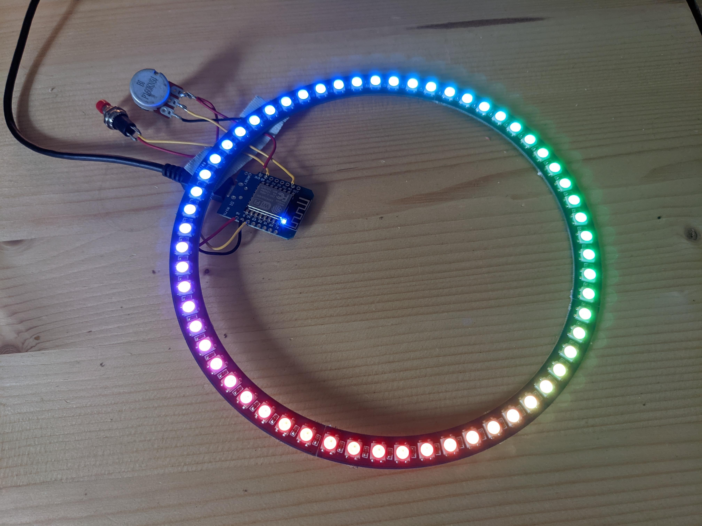

Software
Arduino is een opensource-computerplatform bedoeld om microcontrollers eenvoudig te maken. Dit platform is bedoeld voor iedereen die geïnteresseerd is in het maken en ontwerpen van slimme en creatieve objecten. Als basis hiervoor is de Arduino IDE waarmee aan de hand van de Arduino library voor C++ programma's geschreven kunnen worden voor de diverse Arduino microcontrollers.
Door de grote populariteit van Adruino is het ondertussen ook mogelijk om met de Arduino IDE en de bijbehorende programmeertaal vergelijkbare microcontrollers te programmeren, zoals de microcontroller die we voor dit project gebruikt hebben.
Allereerst zullen we je laten zien hoe je de Arduino IDE installeerd en code upload naar de microcontroller. Vervolgens zullen we een korte introductie geven in het programmeren in C++ en aansluitend de verschillende facetten van embedded programmeren doorlopen.
Liever een uitgebreide IDE gebruiken?
Het is ook mogelijk om Arduino's en andere microcontrollers te programmeren en flashen door middel van de PlatformIO plugin voor Visual Studio Code of een van de andere ondersteunde editors.
Arduino IDE installeren
De Arduino IDE kan gebruikt worden om code te schrijven voor en te uploaden naar microcontrollers. Deze is standaard geschikt voor alle Arduino microcontrollers en met wat aanpassingen ook voor andere microcontrollers. Download en installeer de Arduino IDE vanaf https://www.arduino.cc/en/software.
ESP8266 add-on
De microcontroller die wij voor dit project gebruiken is een WEMOS D1 Mini op basis van een esp8266. Dit is geen standaard Arduino product en wordt daarom ook niet standaard door de Arduino IDE ondersteund. Daarom moeten we een add-on toevoegen aan de Arduino IDE om code te kunnen compileren en uploaden naar de microcontroller. Volg daarvoor, nadat je de Arduino IDE geïnstalleerd hebt, de volgende stappen:
- Ga in je Arduino IDE naar File > Preferences
- Voeg http://arduino.esp8266.com/stable/package_esp8266com_index.json toe aan het Additional Boards Manager URLs veld en klik daarna op Ok.
- Open de Boards Manager, ga naar Tools > Board > Boards Manager....
- Zoek naar ESP8266 en druk op de installeerknop bij ESP8266 by ESP8266 Community.
- Als het goed is zou de add-on binnen enkele seconden geïnstalleerd moeten zijn.
Adafruit Neopixel library installeren
Om alle leds op de ledring aan te sturen is een library vereist. Een library is een collectie code die het makkelijker maakt om bepaalde sensoren, displays, modules en in ons geval een ledring te verbinden met een microcontroller. Er zijn vele verschillende libraries beschikbaar om te installeren voor diverse toepassingen.
Volg de volgende stappen om de Adafruit Neopixel library te installeren:
- Ga naar Sketch > Include Library > Manage Libraries....
- Zoek naar Neopixel en druk op de installeerknop bij Adafruit NeoPixel.
- Als het goed is zou de library binnen enkele seconden geïnstalleerd moeten zijn.
Let op! Installeer niet de Adafruit DMA neopixel library
Dat is een andere library, dus dat gaat niet werken met onze ledring.
Als je gebruik wilt maken van een library in je programma kun je een eerder geïnstalleerde library toevoegen door te gaan naar Sketch > Include Library en hem daar te selecteren.
Code compileren en uploaden
Wanneer je tevreden bent met je code is het tijd om deze te compileren en te uploaden naar de microcontroller die je met een USB kabel aan je computer hebt verbonden.
Om je code te compileren druk je op het groene vinkje linksboven. Bij de compilatie wordt gecontroleerd of er geen fouten in je code zitten en wordt de code omgezet naar instructies die voor de microcontroller te begrijpen zijn. Als er nog fouten in de code zitten dan zal dat in de console onder aan de IDE weergeven worden.
Is je code gecompileerd dan kan deze geuploaded worden naar de microcontroller. Volg daarvoor de volgende stappen:
- Selecteer het juiste board, ga naar Tools > Board en kies uit de lijst de LOLIN(WEMOS) D1 R2 & mini.
- Selecteer de juiste COM poort onder Tools > Port.
- Druk op de upload knop, dit is het groene pijltje links boven naast het vinkje.
Welke COM poort moet ik gebruiken? Ik zie er meerdere.
Trek de USB kabel van de ledring uit je computer, en onthoud welke COM poorten er in het lijstje staan. Stop de USB kabel er weer in en kijk welke er bij gekomen is. Dit is de COM poort van de ledring. Zie je geen verschil? Gebruik dan een andere USB poort op je computer.
Als alles goed gaat zal in de console onder in de IDE weergeven worden dat het uploaden is gelukt.
Test code

Gebruik de volgende code om te testen of je hardware goed werkt. Als alles correct aangesloten is zal er een regenboog over de ledring cirkelen. Door aan de draaiknop te draaien moet deze sneller of langzamer gaan draaien. Als je het knopje indrukt moet deze stoppen met draaien.
Help! Er is wat mis!
Gedraagt je hardware zich niet zoals hierboven beschreven? Blijf kalm en kijk in de probleemoplosser.
1 2 3 4 5 6 7 8 9 10 11 12 13 14 15 16 17 18 19 20 21 22 23 24 25 26 27 28 29 30 31 32 33 34 35 36 37 38 | |